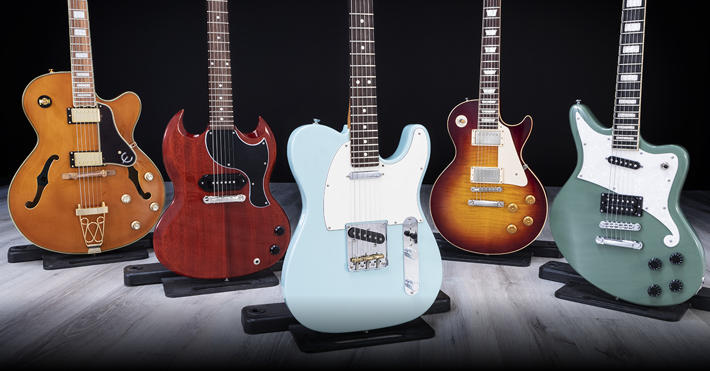
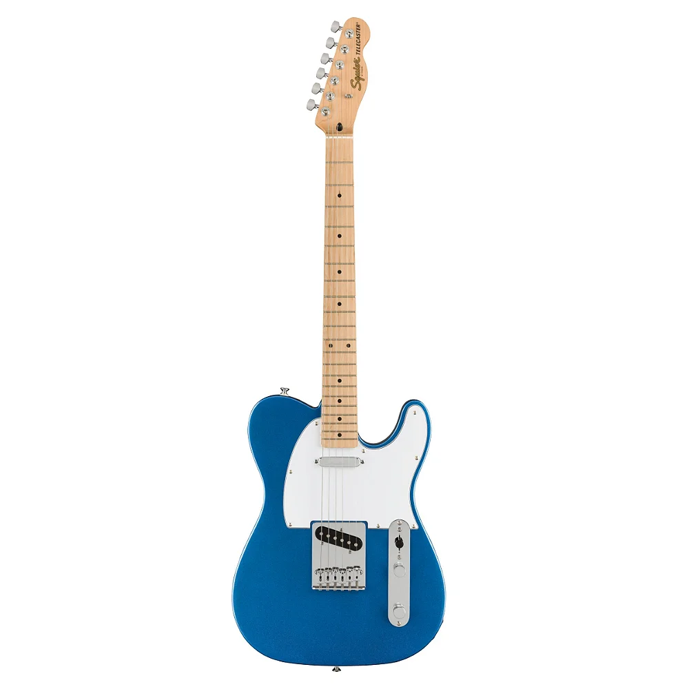
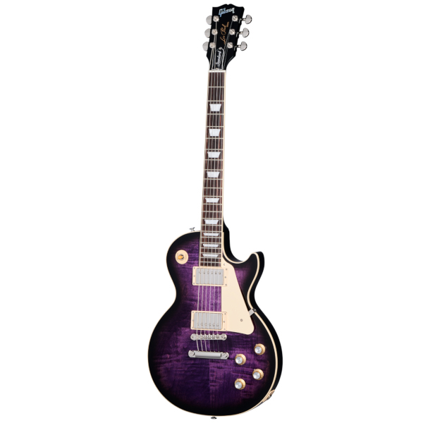
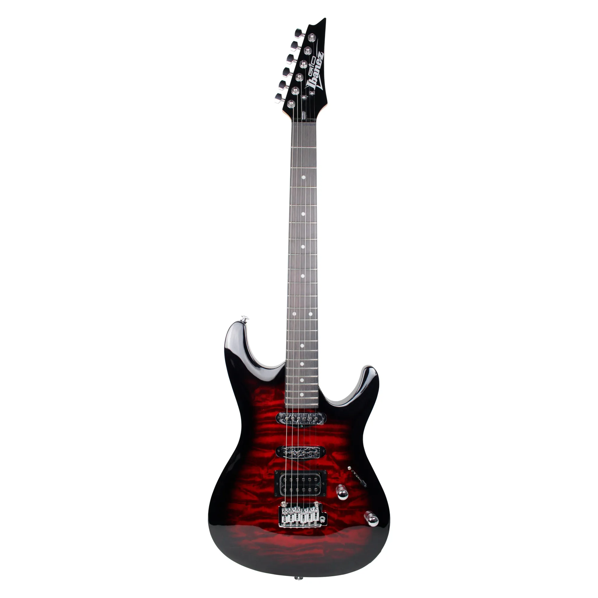
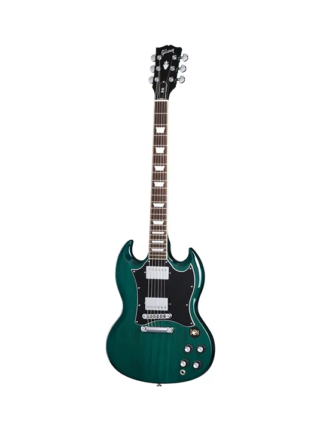
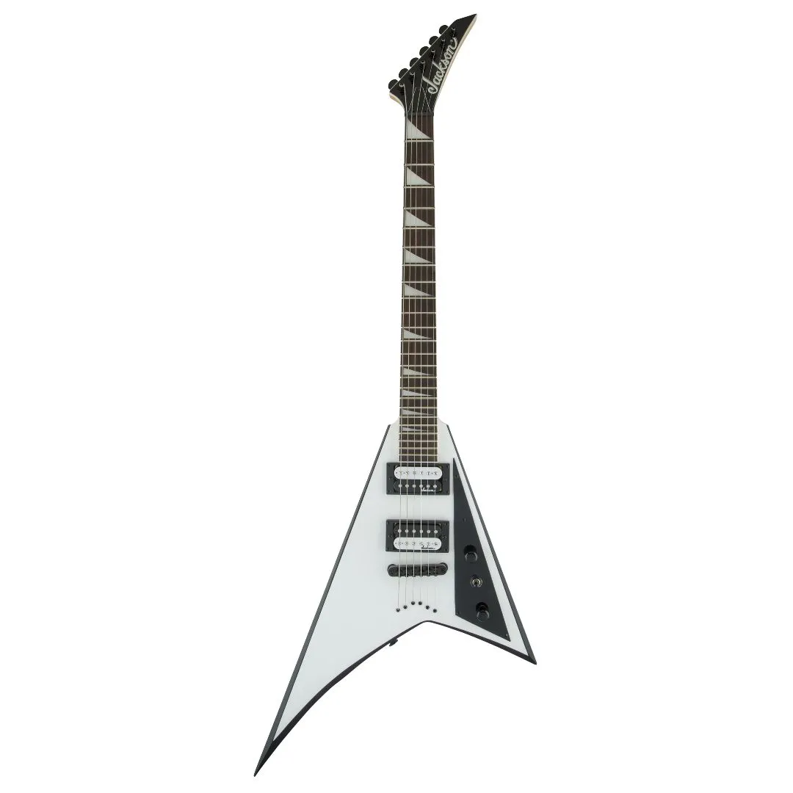
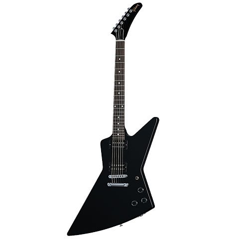

Descubra e conheça os tipos e modelos de guitarras mais populares, sendo elas seis tipos: Telecaster, Les Paul, Stratocaster, SG, Flying V e Explorer.
 Abaixo iremos mostrar os modelos de guitarras mais conhecidos entre os instrumentistas, relatando as características de cada tipo, explicando detalhadamente.
Telecaster
Apesar de não ser o mais famoso, esse é o modelo que pode ser considerado a origem das guitarras de corpo sólido, sendo desenvolvido originalmente pela Fender, no início dos anos 1950 e foi inicialmente chamado de Broadcaster. Caracteristicamente, a Telecaster tem o corpo feito em madeira Alder e também é comum que esse instrumento tenha braço e escala construído com uma única peça de madeira Maple. O timbre gerado por essa combinação de características é bastante singular e conquistou os corações de artistas da música country americana.

Les Paul
Também fabricada em série a partir do início dos anos 1950, o modelo Les Paul é o carro chefe da Gibson, sendo que uma das características mais marcantes desse instrumento é o corpo feito em madeira Mogno. Uma curiosidade é que hoje em dia a produção desse modelo de guitarra nos Estados Unidos está sendo feita Maple. A guitarra vem normalmente com dois captadores humbuckers, o que deixa o som “gordo”, ideal para quem gosta de tocar rock’n’roll carregado de distorção.

Stratocaster
Esse modelo foi criado pela Fender, em 1954, como uma derivação da Telecaster. Popularizado posteriormente por guitarristas lendários, como Jimi Hendrix, a versatilidade desse instrumento é o que faz dele um best seller. A versatilidade desse instrumento, faz com que ele seja usado por músicos que tocam diferentes gêneros e estilos. Notadamente, guitarristas de rock, blues e funk se dão muito bem com a Stratocaster.

SG
A empresa Gibson em 1960 lançou a Les Paul SG, que mais tarde passou a se chamar apenas SG. A guitarra foi projetada para solucionar esses “problemas” que algumas pessoas enxergavam na Les Paul. O nome SG vem das iniciais das palavras solid guitar (guitarra sólida). O corpo do instrumento é produzido com madeira Mogno e ela usualmente vem equipada com dois ou três captadores humbuckers. Uma curiosidade sobre a SG é que, apesar da captação idêntica a da Les Paul, o timbre desse instrumento é bastante diferente. O modelo foi consagrado por grandes guitarristas, a exemplo de Tony Iommi (Black Sabbath) e Angus Young (AC/DC).

Flying V
O projeto da Flying V surgiu em 1957 com uma ideia da Gibson: criar instrumentos com design mais futurista. No entanto, a ideia não deu certo e já em 1959 a guitarra teve a linha de produção interrompida. O instrumento só voltou ao mercado no final da década seguinte. A Flying V é uma guitarra que vem equipada com captadores humbucker, o que faz dela um modelo perfeito para quem quer tirar um som pesado.

Explorer
Ela foi lançada junto com a Flying V, no final da década de 1950, mas demorou um pouco mais para sair de linha pela primeira vez. Em 1963, a produção foi interrompida por causa da pouca popularidade do modelo, mas em 1976 a Gibson voltou a produzir a guitarra. Isso aconteceu porque outras marcas começaram a produzir esse tipo de instrumento e obter sucesso na comercialização.

Conclusão
Diante essa lista dos modelos de guitarras mais populares no mundo, é possivel analizar que ao decorrer dos anos, os modelos de guitarras evoluiram de várias formas, esses e como assim também outros tipos existentes. Valendo ressaltar que hoje em dia esses modelos foram replicados por diversas marcas no mercado de instrumentos musicais.